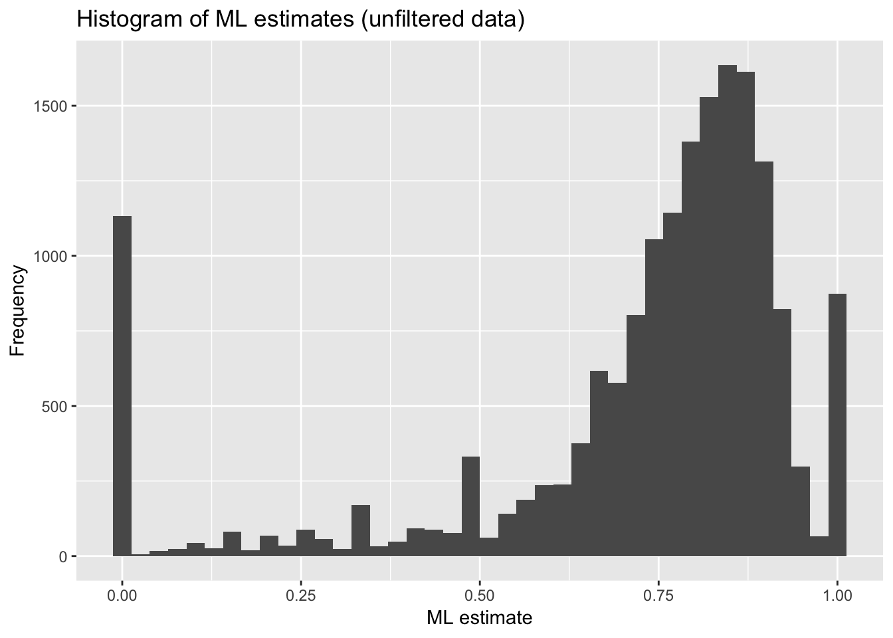
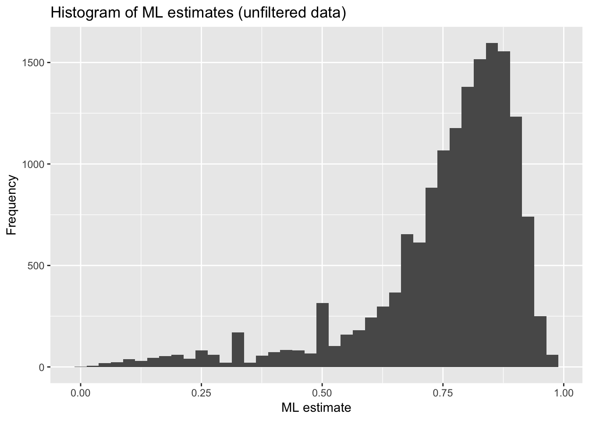
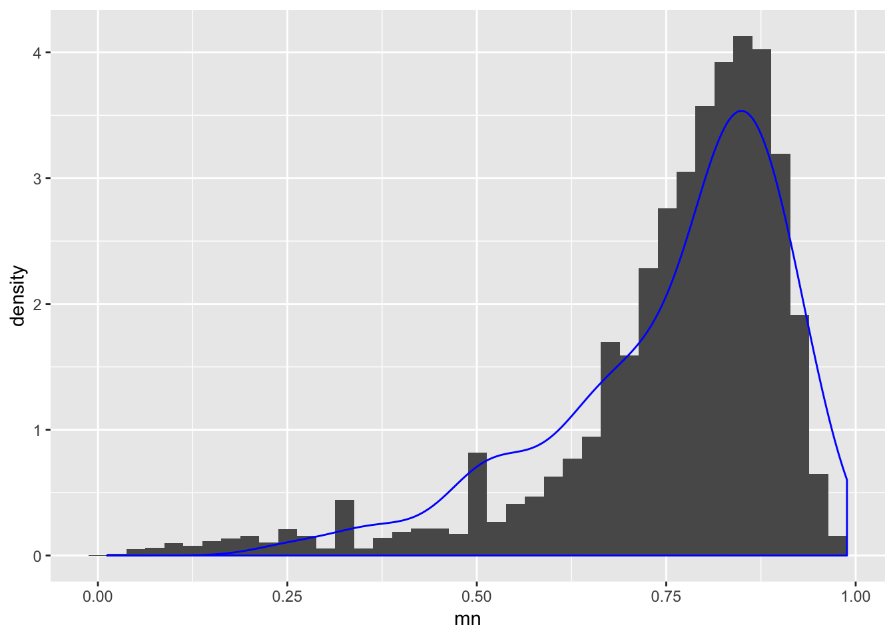
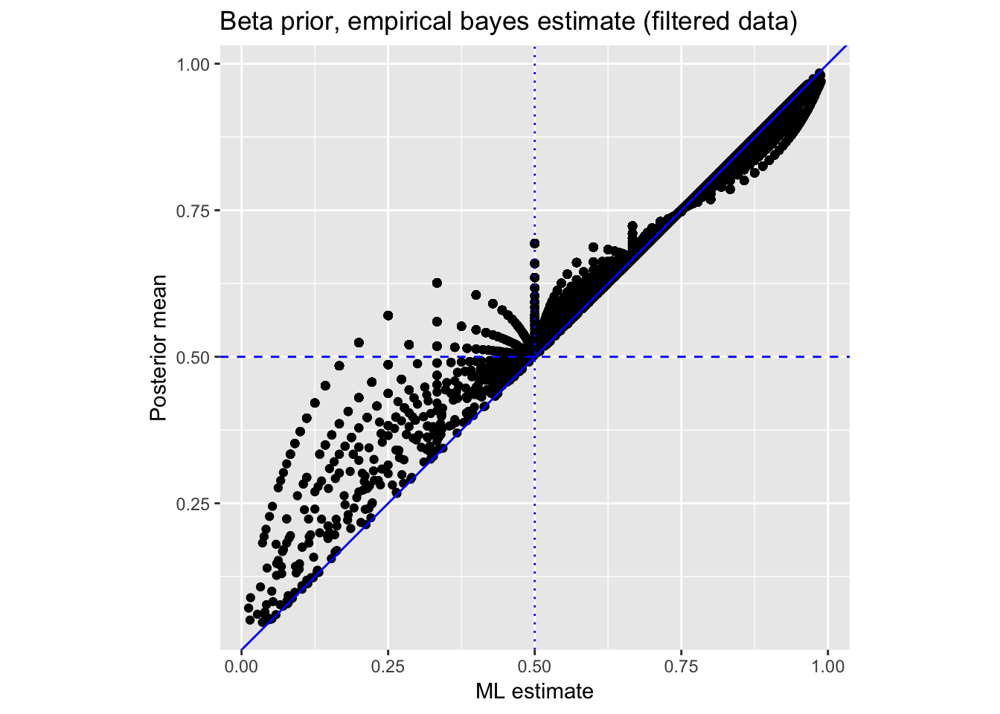
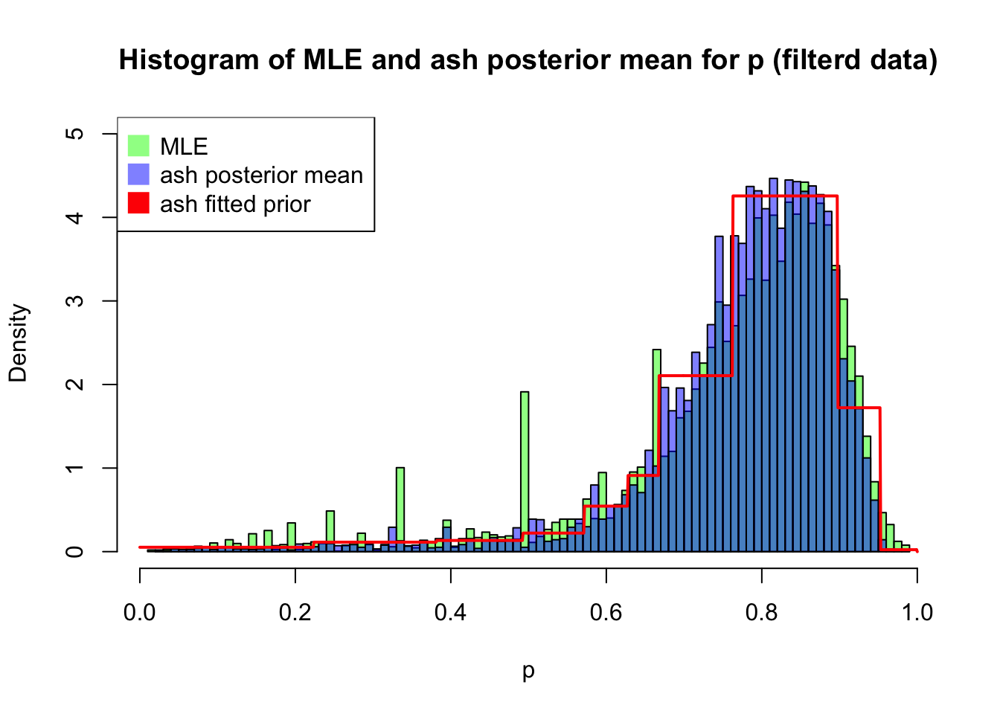
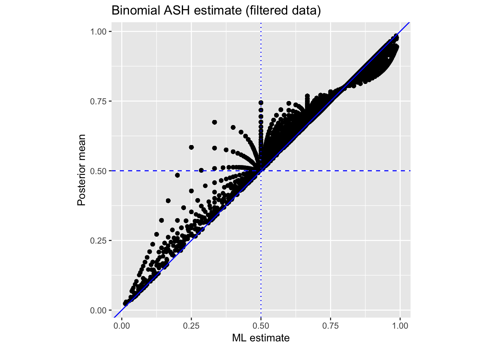
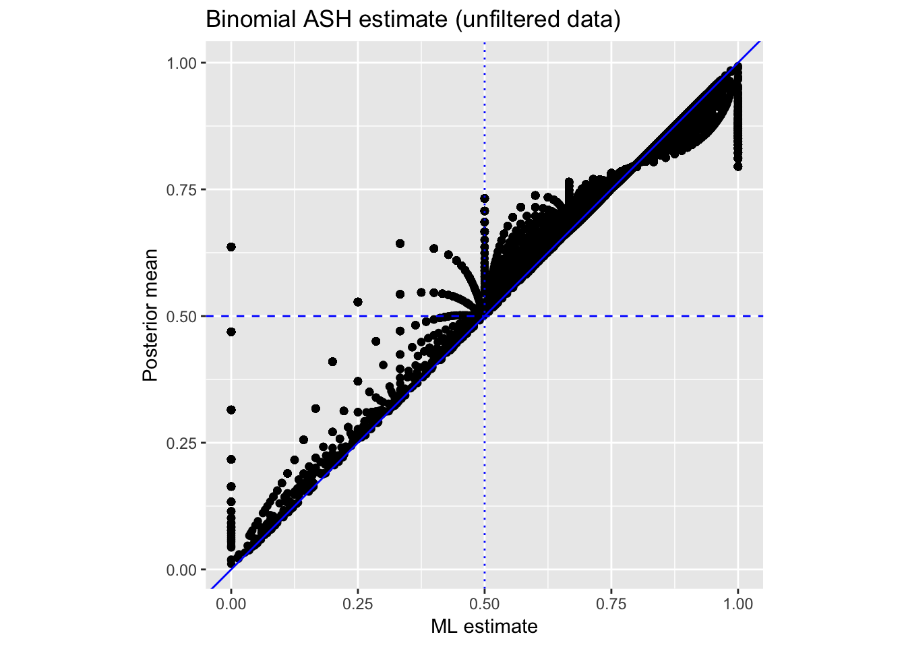

Last updated: 2018-08-07
workflowr checks: (Click a bullet for more information) ✔ R Markdown file: up-to-date
Great! Since the R Markdown file has been committed to the Git repository, you know the exact version of the code that produced these results.
✔ Environment: empty
Great job! The global environment was empty. Objects defined in the global environment can affect the analysis in your R Markdown file in unknown ways. For reproduciblity it’s best to always run the code in an empty environment.
✔ Seed:
set.seed(20180705)
The command set.seed(20180705) was run prior to running the code in the R Markdown file. Setting a seed ensures that any results that rely on randomness, e.g. subsampling or permutations, are reproducible.
✔ Session information: recorded
Great job! Recording the operating system, R version, and package versions is critical for reproducibility.
✔ Repository version: f41c8e1
wflow_publish or wflow_git_commit). workflowr only checks the R Markdown file, but you know if there are other scripts or data files that it depends on. Below is the status of the Git repository when the results were generated:
Ignored files:
Ignored: analysis/._index.Rmd
Ignored: analysis/stem_cache/
Ignored: data/._annotation.txt
Ignored: data/._molecules.txt
Ignored: data/._reads-bulk.txt
The purpose of this document was to perform quantitative assessment of the difference between the counts of gene \(g\) in single cell data and the counts of gene \(g\) in bulk data. See here for Matthew’s formulation of the problem.
The challenge here is that for each gene \(g\), the total counts \(C_g = X_g^s + X_g^b\) may be too big or too small by chance. We apply two approaches that can account for this uncertainty.
We use the data from Tung et al. The data files are available here.
library(tidyr)
library(dplyr)Warning: package 'dplyr' was built under R version 3.5.1
Attaching package: 'dplyr'The following objects are masked from 'package:stats':
filter, lagThe following objects are masked from 'package:base':
intersect, setdiff, setequal, unionanno <- read.table("data/annotation.txt", header = TRUE,
stringsAsFactors = FALSE)
molecules <- read.table("data/molecules.txt", header = TRUE,
stringsAsFactors = FALSE)
reads_bulk <- read.table("data/reads-bulk.txt", header = TRUE, stringsAsFactors = FALSE)We take one replicate for now: NA19101.r1.
molecules_19101_r1 <- molecules[ ,anno$batch == "NA19101.r1"]
reads_bulk_19101_r1 <- reads_bulk[ ,grep("NA19101.r1", colnames(reads_bulk))]
# Let's compute for the single cell data, the counts of gene $g$ across all the individual cells. Compute \(X_g^{b}\) and \(X_g^s\):
counts_single <- rowSums(molecules_19101_r1)
counts_bulk <- reads_bulk_19101_r1
all.equal(rownames(counts_bulk), rownames(counts_single))[1] TRUEcounts <- data.frame(counts_single, counts_bulk)
row.names(counts) <- row.names(molecules_19101_r1)
counts <- counts[which(rowSums(counts)>0),]
dim(counts)[1] 17429 2Compute the ML estimates \(\hat{p}_g=X_g^{b}/(X_g^{b}+X_g^{s})\). We also form a filtered subset which removes genes with all zero bulk reads or all zero single cell reads.
counts$total <- counts$counts_bulk + counts$counts_single
counts$mn <- counts$counts_bulk/counts$total
library(tibble)
counts_filtered <- counts %>% rownames_to_column('gene') %>%
filter(!(mn == 0 | mn == 1)) %>% column_to_rownames('gene')Plot the ML estimate \(\hat{p}_g = X_g^s / (X_g^s + X_g^b)\).
library(ggplot2)
ggplot(data.frame(mn = with(counts, counts_bulk/(counts_bulk + counts_single))),
aes(x = mn)) + geom_histogram(bins = 40)+
labs(x = "ML estimate", y = "Frequency",
title = "Histogram of ML estimates (unfiltered data)")
| Version | Author | Date |
|---|---|---|
| 5a0352d | mengyin | 2018-08-07 |
ggplot(data.frame(mn = with(counts_filtered, counts_bulk/(counts_bulk + counts_single))),
aes(x = mn)) + geom_histogram(bins = 40)+
labs(x = "ML estimate", y = "Frequency",
title = "Histogram of ML estimates (unfiltered data)")
| Version | Author | Date |
|---|---|---|
| 5a0352d | mengyin | 2018-08-07 |
Here we follow the methods in this blog post.
Use optim to find beta prior parameters.
loglik <- function(mu, x) {
sum(-dbeta(x,mu[1],mu[2],log = TRUE))
}
fit_optim <- optim(par = c(30,20), fn = loglik,
x = counts_filtered$mn,
method = "L-BFGS-B", lower=c(0,0))
fit_optim$par
[1] 5.436891 1.845051
$value
[1] -8622.246
$counts
function gradient
16 16
$convergence
[1] 0
$message
[1] "CONVERGENCE: REL_REDUCTION_OF_F <= FACTR*EPSMCH"ggplot() +
geom_histogram(data = counts_filtered, aes(x = mn, y = ..density..), bins = 40) +
geom_density(data = data.frame(x = rbeta(100, fit_optim$par[1], fit_optim$par[2])),
aes (x = x), color = "blue")
| Version | Author | Date |
|---|---|---|
| 5a0352d | mengyin | 2018-08-07 |
Compute posterior mean.
alpha0 <- fit_optim$par[1]
beta0 <- fit_optim$par[2]
counts_eb <- counts_filtered %>%
mutate(eb_estimate = (counts_bulk + alpha0)/(counts_single + counts_bulk + alpha0 + beta0))Plot \(p\) estimates.
counts_eb %>%
ggplot(aes(mn, eb_estimate)) +
geom_point(aes(colour = counts_bulk), colour = "black") +
geom_vline(xintercept = .5, colour = "blue", lty = 3) +
geom_hline(yintercept = .5, colour = "blue", lty = 2) +
geom_abline(intercept = 0, slope = 1, colour = "blue") +
labs(x = "ML estimate", y = "Posterior mean",
title = "Beta prior, empirical bayes estimate (filtered data)") +
coord_fixed(ratio = 1)
| Version | Author | Date |
|---|---|---|
| 5a0352d | mengyin | 2018-08-07 |
Suppose the bulk data and single cell data are independent, we have \(X_g^b\sim Bin(X_g^b+X_g^s, p_g)\). We use the binomial ASH to estimate \(p_g\): assuming that \(p_g\) comes from a unimodal prior, the posterior mean of \(p_g\) is used to estimate \(p_g\).
Applying to filtered data:
library(ashr)
ngenes <- dim(counts_filtered)[1]
fit_filter <- ash.workhorse(rep(0, ngenes),
1,
lik = lik_binom(counts_filtered$counts_bulk,
counts_filtered$total),
mixcompdist = "halfuniform", prior="uniform")
summary(fit_filter$result$PosteriorMean) Min. 1st Qu. Median Mean 3rd Qu. Max.
0.02128 0.73072 0.79917 0.77455 0.85764 0.98473 Fitted binomial ASH prior density:
# plot density of an unimix object g on x
dens_unimix = function(g, x){
sapply(x, dens_unimix_sing, pi=g$pi, a=g$a, b=g$b)
}
dens_unimix_sing = function(x,pi,a,b){
sum((x>=a & x<b)/(b-a)*pi,na.rm=TRUE)
}
x <- seq(0,1,by=0.001)
g <- fit_filter$fitted_g
dens_uni <- dens_unimix(g, x)
pointmass <- data.frame(point = g$a[g$a==g$b],
mass = g$pi[g$a==g$b])
hist(counts_filtered$mn,100,prob=TRUE,col=rgb(0,1,0,0.5),ylim=c(0,5),
xlab="p",main="Histogram of MLE and ash posterior mean for p (filterd data)")
hist(fit_filter$result$PosteriorMean, 100, prob=TRUE,
xlim=c(0,1), col=rgb(0,0,1,0.5), add=T)
lines(x, dens_uni, type="l",col="red",lwd=2)
legend("topleft", legend=c("MLE","ash posterior mean","ash fitted prior"), col=c(rgb(0,1,0,0.5),rgb(0,0,1,0.5),2), pt.cex=2, pch=15 )
| Version | Author | Date |
|---|---|---|
| 5a0352d | mengyin | 2018-08-07 |
Fitted prior mode: 0.7623608.
Plot binomial ASH \(p\) estimates vs the ML estimates \(\hat{p}\).
counts_filtered %>%
mutate(posterior_mean = fit_filter$result$PosteriorMean) %>%
ggplot(aes(mn, posterior_mean)) +
geom_point(aes(colour = counts_bulk), colour = "black") +
geom_vline(xintercept = .5, colour = "blue", lty = 3) +
geom_hline(yintercept = .5, colour = "blue", lty = 2) +
geom_abline(intercept = 0, slope = 1, colour = "blue") +
labs(x = "ML estimate", y = "Posterior mean",
title = "Binomial ASH estimate (filtered data)") +
coord_fixed(ratio = 1)
| Version | Author | Date |
|---|---|---|
| 5a0352d | mengyin | 2018-08-07 |
Genes with smallest/largest posterior mean of \(p_g\):
counts_filtered$postmean <- fit_filter$result$PosteriorMean
# genes with smallest posterior mean
counts_filtered[order(counts_filtered$postmean)[1:10],] counts_single counts_bulk total mn postmean
ERCC-00095 137 2 139 0.01438849 0.02127660
ERCC-00059 82 1 83 0.01204819 0.02352942
ENSG00000182463 64 1 65 0.01538462 0.02985102
ENSG00000198558 144 4 148 0.02702703 0.03333333
ENSG00000270672 433 16 449 0.03563474 0.03769401
ERCC-00112 280 12 292 0.04109589 0.04421769
ENSG00000256222 193 8 201 0.03980100 0.04433498
ENSG00000232196 60 2 62 0.03225806 0.04687989
ENSG00000256045 930 45 975 0.04615385 0.04708291
ENSG00000270188 135 6 141 0.04255319 0.04895105# genes with largest posterior mean
counts_filtered[order(counts_filtered$postmean,decreasing=TRUE)[1:10],] counts_single counts_bulk total mn postmean
ENSG00000248098 23 1547 1570 0.9853503 0.9847328
ENSG00000146955 3 241 244 0.9877049 0.9776288
ENSG00000258947 110 4264 4374 0.9748514 0.9746344
ENSG00000125730 3 223 226 0.9867257 0.9724975
ENSG00000167774 9 389 398 0.9773869 0.9647538
ENSG00000087086 12709 344971 357680 0.9644682 0.9644656
ENSG00000111669 6204 163570 169774 0.9634573 0.9634518
ENSG00000104835 48 1404 1452 0.9669421 0.9621675
ENSG00000052344 210 5264 5474 0.9616368 0.9608300
ENSG00000075624 17904 410813 428717 0.9582382 0.9582360Applying to unfiltered data:
ngenes <- dim(counts)[1]
counts$total <- counts$counts_single+counts$counts_bulk
fit_unfilter <- ash.workhorse(rep(0, ngenes), 1,
lik = lik_binom(counts$counts_bulk,counts$total),
mixcompdist = "halfuniform", prior="uniform")
summary(fit_unfilter$result$PosteriorMean) Min. 1st Qu. Median Mean 3rd Qu. Max.
0.01087 0.71278 0.79505 0.75710 0.85270 0.99326 Plot binomial ASH \(p\) estimates vs the ML estimates \(\hat{p}\).
counts %>%
mutate(posterior_mean = fit_unfilter$result$PosteriorMean) %>%
ggplot(aes(mn, posterior_mean)) +
geom_point(aes(colour = counts_bulk), colour = "black") +
geom_vline(xintercept = .5, colour = "blue", lty = 3) +
geom_hline(yintercept = .5, colour = "blue", lty = 2) +
geom_abline(intercept = 0, slope = 1, colour = "blue") +
labs(x = "ML estimate", y = "Posterior mean",
title = "Binomial ASH estimate (unfiltered data)") +
coord_fixed(ratio = 1)
| Version | Author | Date |
|---|---|---|
| 5a0352d | mengyin | 2018-08-07 |
sessionInfo()R version 3.5.0 (2018-04-23)
Platform: x86_64-apple-darwin15.6.0 (64-bit)
Running under: macOS High Sierra 10.13.3
Matrix products: default
BLAS: /Library/Frameworks/R.framework/Versions/3.5/Resources/lib/libRblas.0.dylib
LAPACK: /Library/Frameworks/R.framework/Versions/3.5/Resources/lib/libRlapack.dylib
locale:
[1] en_US.UTF-8/en_US.UTF-8/en_US.UTF-8/C/en_US.UTF-8/en_US.UTF-8
attached base packages:
[1] stats graphics grDevices utils datasets methods base
other attached packages:
[1] ashr_2.2-8 ggplot2_3.0.0 bindrcpp_0.2.2 tibble_1.4.2
[5] dplyr_0.7.6 tidyr_0.8.1
loaded via a namespace (and not attached):
[1] Rcpp_0.12.18 pillar_1.3.0 compiler_3.5.0
[4] git2r_0.23.0 plyr_1.8.4 workflowr_1.1.1
[7] bindr_0.1.1 iterators_1.0.10 R.methodsS3_1.7.1
[10] R.utils_2.6.0 tools_3.5.0 digest_0.6.15
[13] lattice_0.20-35 evaluate_0.11 gtable_0.2.0
[16] pkgconfig_2.0.1 rlang_0.2.1 foreach_1.4.4
[19] Matrix_1.2-14 rstudioapi_0.7 parallel_3.5.0
[22] yaml_2.2.0 withr_2.1.2 stringr_1.3.1
[25] knitr_1.20 rprojroot_1.3-2 grid_3.5.0
[28] tidyselect_0.2.4 glue_1.3.0 R6_2.2.2
[31] rmarkdown_1.10 purrr_0.2.5 magrittr_1.5
[34] whisker_0.3-2 MASS_7.3-50 codetools_0.2-15
[37] backports_1.1.2 scales_0.5.0 htmltools_0.3.6
[40] assertthat_0.2.0 colorspace_1.3-2 labeling_0.3
[43] stringi_1.2.4 pscl_1.5.2 doParallel_1.0.11
[46] lazyeval_0.2.1 munsell_0.5.0 truncnorm_1.0-8
[49] SQUAREM_2017.10-1 crayon_1.3.4 R.oo_1.22.0 This reproducible R Markdown analysis was created with workflowr 1.1.1